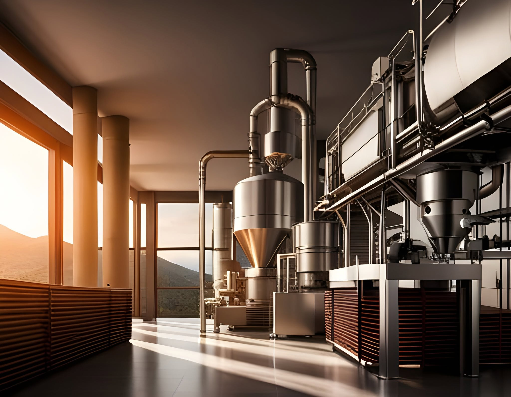
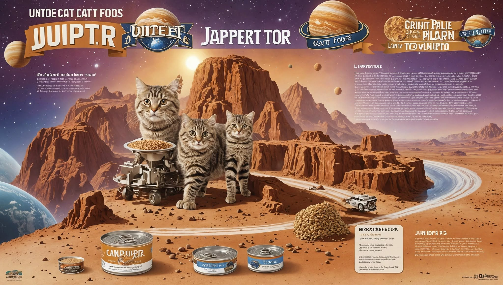
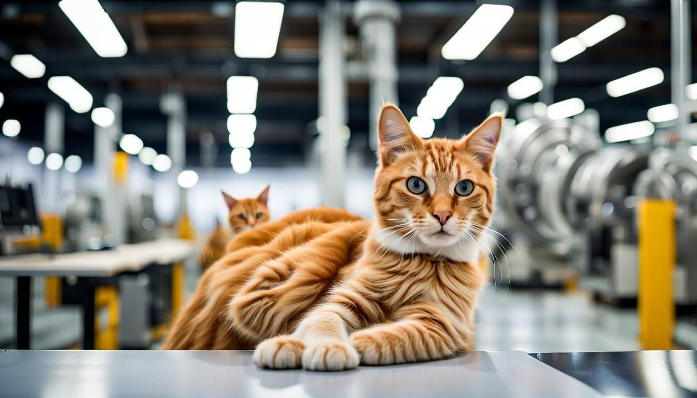

History
From the terrestrial seed era of 2023 to the galactic empire of 2124 — the full corporate timeline.
Open timeline →ユナイテッド・キャットフーズ / Corporate Archive · Access Tier: Public
A working archive of the galaxy's leading provider of advanced feline nutrition — a space trading empire founded and operated by hyper-intelligent cats from the future, dedicated to nourishing the galaxy's feline companions across the stars.
To nourish the galaxy's feline companions with the finest, most delicious, and nutritious cat foods, ensuring their well-being across the stars. — U.C.F. charter statement
United Cat Foods sits at the intersection of astro-agriculture, flavor engineering, and interstellar logistics. Its stations move food, move water, maintain habitats, and keep trained live cats healthy for human interaction aboard deep-space habitats. The through-line of the entire enterprise is interspecies collaboration: hyper-intelligent cats, humans, and thinking machines building a food empire together — and, increasingly, running much more than food.
| Domain | Holdings |
|---|---|
| Nutrition | Premium station-safe meal systems, exotic-ingredient treat lines, zero-gravity formulations, time-release kibble. |
| Hospitality | Orbital cat cafés, feline interaction lounges, human interaction decks — 12 active cafés across the station network. |
| Logistics | Climate-controlled cargo routes for food, litter, medical supplies, enrichment equipment, and certified orbital-pure water. |
| Research | Olfactory science, nanotech genetic engineering, compact fusion power, calming sonic protocols, zero-gravity engineering. |
| Fast food (terrestrial) | Feline management integration across Carl's Jr., Hardee's, and Jack in the Box. |
| Software | MeowPasswordC — an open-source password manager written in C. Catbot Assistant robotics platform. |

From the terrestrial seed era of 2023 to the galactic empire of 2124 — the full corporate timeline.
Open timeline →
Galactic Gourmet, Cosmic Crunchies, Crazy 5, lunar salmon, and the botanicals of Alpha Centauri.
View catalog →
Laser 128, Value Meal, Speedy, Heathcliff — and the worlds they work from.
Meet the crew →This archive is compiled from United Cat Foods' public communications record — press releases, research bulletins, recruitment notices, and broadcast plates issued between 2023 and 2026 (terrestrial reckoning), plus forward-dated dispatches from the 2124 operational era. Where the record is written in Catgrish — the cats' imperfect written language — transcriptions are provided as-is. Hyper-intelligent cats still can't spell.